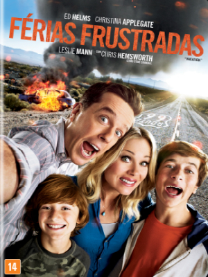

Filmes
Trailers
Trilha Sonora
Contato
Sobre
Férias Frustradas

Diretor:
John Francis Daley e Jonathan M. Goldstein
Com:
Ed Helms, Christina Applegate, Leslie Mann, Beverly D'Angelo, Ron Livingston, Skyler Gisondo, Steele Stebbins, Chris Hemsworth, Chevy Chase
Gênero:
Comédia
Censura:
14 anos
Tempo de Duração:
1h38min
Sinopse:
Rusty Griswold (Ed Helms) trabalha como piloto de avião na EconoAir, uma companhia de baixo custo. Ele é casado com Debbie (Christina Applegate) e tem dois filhos, James (Skyler Gisondo) e Kevin (Steele Stebbins), que vivem brigando. Disposto a se divertir com a família, Rusty decide seguir os passos de seu pai (Chevy Chase) e comandar uma ida ao parque de diversões Wally World, localizado a dias de viagem. Rusty logo aluga um carro albanês, sem imaginar que a viagem em família será bem mais complicada do que imaginava.